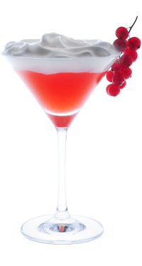

Очарованный — Замечай знаки!
Наблюдательные обольстительницы знают множество «знаков», показывающих что мужчина ими очарован…
Легенда коктейля
Наблюдательные обольстительницы знают множество «знаков», показывающих что мужчина ими очарован.
Он не переводит разговор на секс, работу или других девушек. Широко улыбается и не отводит взгляд. Старается случайно прикоснуться к понравившейся девушке. Или угощает ее очаровательным коктейлем.
- Как приготовить:
-
- Положи в питчер 2 порезанных кружочка лимонной травы и налей сахарный сироп 40 мл
- Помешивая, доведи до кипения
- Положи в шейкер ягоды веточки красной смородины и гвоздику 3 штучки
- Налей: сироп лимонника из питчера 15 мл, южный комфорт 15 мл и водку 30 мл
- Выжми четвертинку лайма
- Наполни шейкер кубиками льда и взбей
- Перелей через стрейнер и ситечко в охлажденный коктейльный бокал
- Налей в стакан для смешивания березовый сок 100 мл и сироп лимонника из питчера 20 мл
- Выжми четвертинку лайма
- Размешай коктейльной ложкой и дважды перелей через ситечко в сифон для сливок
- Закрой сифон и взбей 3-4 раза
- Укрась коктейль пеной лимонника из сифона и веточкой красной смородины